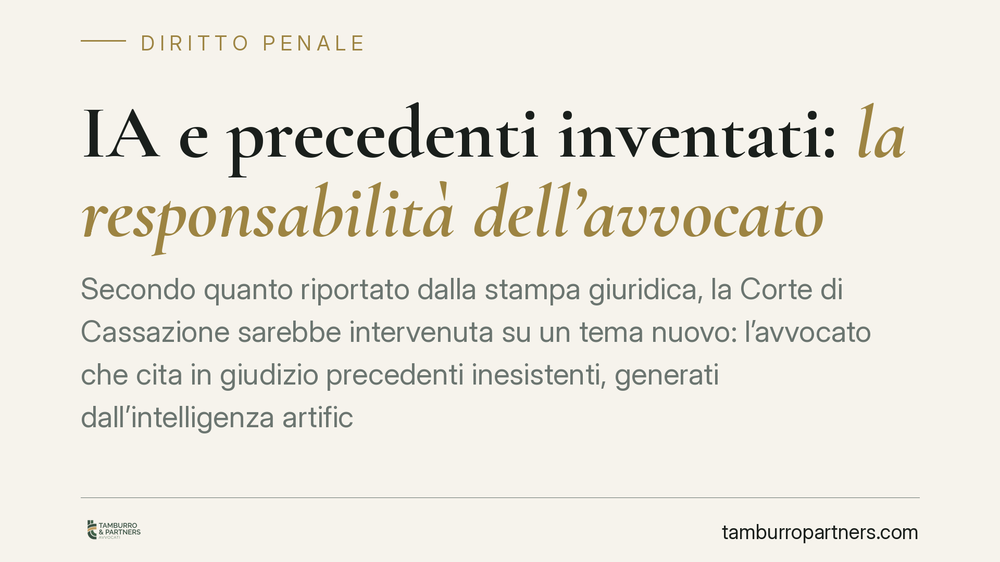

IA e precedenti inventati: la responsabilità dell'avvocato
Secondo quanto riportato dalla stampa giuridica, la Corte di Cassazione sarebbe intervenuta su un tema nuovo: l'avvocato che cita in giudizio precedenti inesistenti, generati dall'intelligenza artificiale, non è esonerato da responsabilità. Il punto è chiaro a prescindere dall'esito del singolo caso: lo strumento non sostituisce il controllo del professionista sulle fonti.

Il fatto
Il tema è emerso in diverse cronache giudiziarie: atti processuali contenenti citazioni di sentenze che, verificate, risultano inesistenti. Non errori di trascrizione, ma riferimenti giurisprudenziali del tutto inventati, riconducibili all'impiego acritico di sistemi di intelligenza artificiale generativa.
Una premessa di metodo. In un articolo che tratta proprio di citazioni non verificate, sarebbe contraddittorio riportare estremi non confermati. Abbiamo quindi scelto di non indicare numero e anno di una pronuncia che non siamo in grado di verificare in modo autonomo sulle banche dati di legittimità. Il principio operativo, però, prescinde dalla singola sentenza: è un dovere professionale consolidato, non una novità creata dalla giurisprudenza.
Perché l'IA "inventa" le sentenze
I modelli linguistici generativi non funzionano come una banca dati giuridica. Non interrogano un archivio di sentenze reali: producono testo stimando, parola dopo parola, la sequenza statisticamente più probabile. Per questo generano con disinvoltura citazioni dall'aspetto perfettamente plausibile — numero di sezione, estremi, massima — ma prive di qualsiasi riscontro reale.
È il fenomeno che in letteratura tecnica viene definito "allucinazione": l'output è coerente nella forma, falso nel contenuto. Il modello non "sa" di aver inventato: non distingue il vero dal verosimile, perché non consulta fonti, le simula.
Inquadramento normativo
Sul piano processuale penale, il riferimento più ricorrente è l'art. 616 del codice di procedura penale, che disciplina le conseguenze economiche a carico del ricorrente in caso di rigetto o inammissibilità del ricorso: condanna al pagamento delle spese del procedimento e, nei casi previsti, di una somma in favore della Cassa delle ammende.
La misura di tale somma è rimessa alla valutazione del giudice. È su questo margine di apprezzamento che si innesta il profilo della colpa: la condotta di chi deposita un atto fondato su precedenti mai esistiti può essere valutata, ragionevolmente, in modo più severo rispetto all'errore scusabile. Resta ferma la responsabilità deontologica e, nei casi più gravi, i possibili profili disciplinari davanti al Consiglio dell'Ordine.
Il punto fermo è anteriore all'IA: la paternità dell'atto resta del difensore. Chi firma risponde di ciò che afferma, indipendentemente dallo strumento utilizzato per redigerlo.
Non è un problema solo italiano
In altri ordinamenti sono emersi casi analoghi di atti processuali contenenti citazioni fabbricate da sistemi di IA, con reazioni da parte delle autorità giudiziarie. Il tema, dunque, non è un'anomalia locale, ma una conseguenza strutturale del modo in cui questi strumenti operano.
Implicazioni pratiche
Per il professionista il messaggio è operativo, non teorico. L'IA può essere un ausilio alla stesura, alla ricerca di spunti, alla sintesi. Non è, allo stato, una fonte autosufficiente. Ogni precedente deve essere verificato alla fonte prima di entrare in un atto.
L'obbligo di controllo non è delegabile al software. Delegare la verifica allo stesso strumento che ha prodotto la citazione equivale a non verificarla: è lo stesso sistema che ha generato il dato a doverlo confermare, e non ne ha la capacità.
Cosa fare in concreto
- Verifica ogni citazione alla fonte ufficiale. Controlla numero, sezione, anno e data di deposito su Italgiure o sulle banche dati di legittimità prima di inserire un precedente in un atto.
- Non fidarti del formato. Una massima ben scritta e un numero di sentenza plausibile non sono prova di esistenza. Apri il testo integrale.
- Tieni una traccia del controllo. Annota la fonte consultata per ogni riferimento giurisprudenziale: in caso di contestazione documenta la diligenza adottata.
- Separa redazione e verifica. Usa l'IA per bozze o riassunti, mai come banca dati di precedenti. La ricerca giurisprudenziale va condotta su strumenti dedicati.
- Forma il tuo studio. Definisci una procedura interna sull'uso dell'IA: chi può usarla, per cosa, e con quale obbligo di controllo finale.
In sintesi
La tecnologia non sposta la responsabilità professionale: la lascia dove è sempre stata, in capo a chi firma l'atto. L'uso dell'IA è legittimo; l'omessa verifica delle fonti non lo è.
Ogni condominio ha una storia a sé.
Se gestisci un'amministrazione e vuoi un confronto su una specifica questione condominiale, scrivi allo studio. Ti rispondiamo entro un giorno lavorativo.